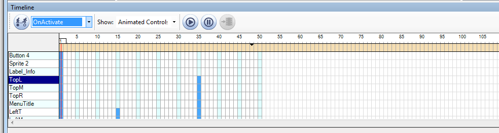
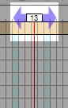
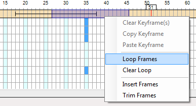

Each view maintains its own set of animations. Two default animations are created and required by all views:
OnActivate
This animation is automatically played whenever a view becomes active. At the very minimum, the OnActivate animation creates a single keyframe for each and every control. In this way, when a View is activated, all controls are animated and places into a known starting state.
You can add keyframes to the OnActivate if needed, but it is not required. The OnActivate animation cannot be renamed or removed, and individual controls cannot be removed from the animation.
OnDeactivate
The OnDeactivate animation is automatically played whenever a view becomes inactive. It contains, by default, no animation channels or keyframes and it is not required that you animate any controls in OnDeactivate. It serves mostly as a convenience if your view has a generic outro animation that should get played whenever it is deactivated.
Timeline View:
Once you have created controls within a view, you can start animating them. This is done primarily through the Timeline View.

The Timeline displays a single animation at a time, and all of the animated controls within that animation. Each control is animated with a set of animation keyframes. In the above screenshot, the animated controls are listed to the left and their keyframes are indicated in the rows to the right. Each blue box represents a keyframe.
Each animated control is required to have a starting keyframe at frame 1 of the animation.
It is important to note that an animation will only animate the controls within that animation - all others will be ignored.
NOTE: The Timeline View will only be active when a view is currently being edited.
Creating an animation:
Animating a control:

Looping an animation:
An animation can loop a single series of frames. During playback, the loop will be repeated indefinitely until the loop is keyed off, ie exited. The animation will then play to its logical end frame and finish.
To loop frames:
Similarly, to clear a loop select the looped frames, right-click and select "Clear Loop"

Previewing an animation:
Once a control has been animated, there are two ways to preview the resulting animation: Playing it back in the Otter Editor or dragging the current frame indicator back and forth.
Using animation playback:
Created with the Personal Edition of HelpNDoc: Easy CHM and documentation editor